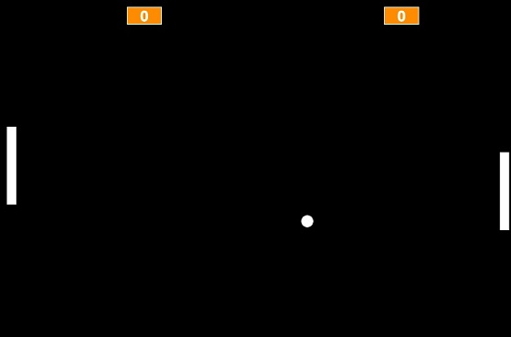
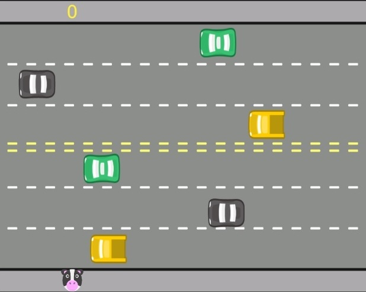

Sobre o Panda Tecnológico
O objetivo desse projeto é praticar tudo o que foi aprendido ao longo do curso: Iniciante em programação.
Nessa pagína, serão disponibilizados os links dos Jogos Classicos , bem como o github, que contém o projeto da Barbearia Alura.
Futuramente, novas paginas serão desenvolvidas e novos projetos serão acrescentados, uma vez que estou iniciando o curso Front-End.
Primeiro Jogo Classico
Jogo classico pong, em que o objetivo é marcar mais pontos que o adversário
Para jogar, basta clicar na opção "PONG" no inicio da página

Segundo Jogo Classico
Jogo classico de atravessar a rua, em que o objetivo é chegar ao outro lado, evitando os veículos
Para jogar, basta clicar na opção "TRAVESSIA" no inicio da página
